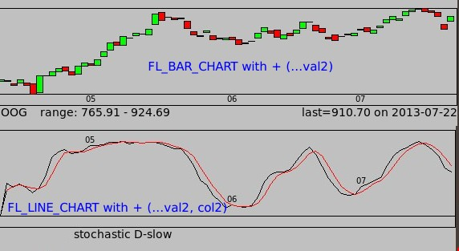

FLTK Fast Light Toolkit A cross platform Gui widget toolkit for linux and windows. |
| FLTK is an easy to use lightweight gui toolkit. It can
be used standalone or best with Fluid, a designer for FLTK
widgets. The learning curve for Fluid is relatively quicker than other Guis, especially if used with Fluid. FLTK has been around for a long time. A great place to get examples is at Erco's. |
| My
Contributions |
|
FL_Chart
Extension I was working on a program to draw stock charts but I couldn't find any charts suitable to draw candlesticks or double line-charts. Normally, the two files to use for Fl_Chart are (Fl_Chart.cxx, Fl_Chart.H). The replacement class is Fl_ChartEx (Fl_ChartEx.cpp, Fl_ChartEx.H). Just add them to your project directory. The new object is called Fl_ChartEx. Use them to get these added effects;  What they do is add two extra arguments to various functions in the Fl_ChartEx class. val2 and col2. This way, both FL_BAR_CHART and FL_LINE_CHART can have an extra value to make candlesticks or add an extra line. col2 is the color for FL_LINE_CHART's 2nd line. Files Download Fl_ChartEx.v1.1.zip Compiling To compile, you will need flstring.h and comment out config.h from it. flstring.h is found from the src directory of fltk's source package. Comment out config.h from flstring.h //# include <config.h> Alternatively, generate config.h from the souce file package (./configure). e.g mychart->add(double val, const char *str, unsigned col, double val2, unsigned col2); changelog v1.0
Fl_ChartEx.H : add val2,col2 to structure v1.1Fl_ChartEx.cpp : add arguments (val2, col2) void add ( val, str, col , val2 , col2 ); void insert ( ind, val, str, col , val2 , col2 ); void replace ( ind, val, str, col , val2 , col2 );
Fl_ChartEx.cpp : copied bwidth definition from barchart
to linechart to make all charts the same x-scale. Examples STKgraffer , MenJob |